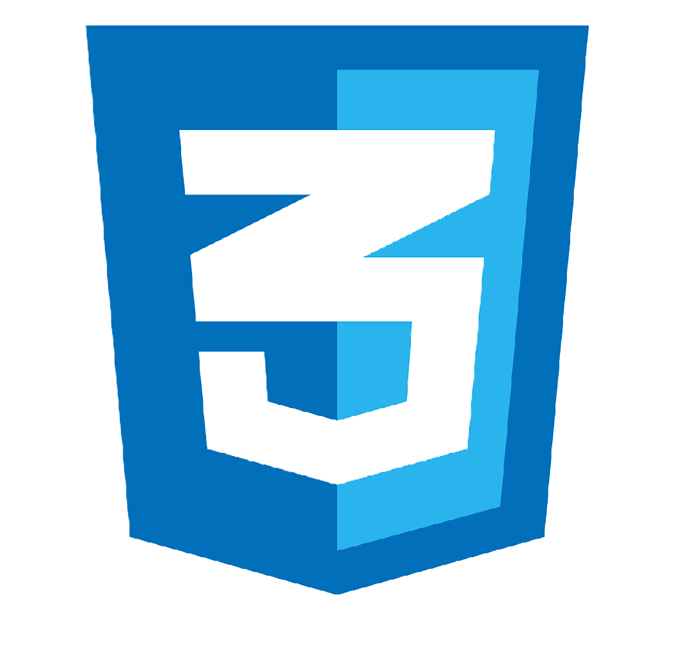
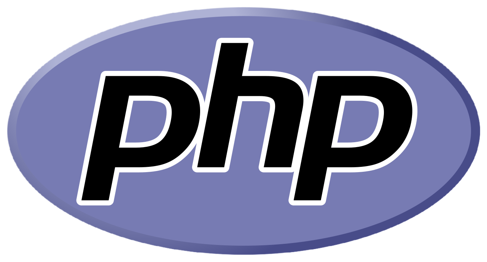

- CSS 
- Bootstrap
- PaperCSS
- Animate.css
- Bulma
- JS

- React
- JQuery
- AngularJS
- Vue.js
- PHP 
- Laravel
- Yii
- Symfony
- CakePHP
- C++

- SFML
- Poco
- GTK+
- Cocos2D-X
- C#

- .Net Framework
- ASP.Net Core
- Unity
- Python

- Django
- Pyramid
- Web2py
- CherryPy
В обоих случаях, мы будем иметь примерно одинаковый состав файлов. Там будут функции, классы и.т.д. которые написаны на языке программирования. Чтобы понять, в чем здесь разница, нужно разобраться в причине, для чего создавалось каждое из этих определений.
Библиотека в программировании - это дополнительные возможности, которые нужны нашему приложению. Это независимая программа, которую мы можем подключать к нашему приложению как независимый модуль.
Это могут быть возможности: работа с датой, email, прием платежей, работа с базой данных и.т.д.
Готовый дополнительный функционал нашему приложению мы можем добавить через библиотеки. См. подробнее в видео по этой ссылке https://youtu.be/MRikQLdLgrU.
Мы могли бы написать функции и классы, которые есть в библиотеке самостоятельно, но т.к. есть уже готовые решения, глупо ими не воспользоваться. Библиотек в проекте может использоваться много. Мы можем подключать разные независимые библиотеки, каждая из которых будет давать нам возможности. Понятие фреймворка связано с понятием библиотеки. Но, нужно понимать, что фреймворк для нашего проекта будет являться одним.
Что такое фреймворк? С англ. языка это "основа", "каркас", "конструкция". Фреймворк, как и библиотека предлагает нам набор готовых функций и возможностей, которые помогают нам разрабатывать приложение. Главное отличие в том, что фреймворк - это "скелет", граница или каркас, на котором строится веб-приложение. Это базовый набор функций и приложений, на которых мы будем строить приложение. Фреймворк дает набор функций, чтобы легче строить наше приложение. Фреймворк создает архитектуру проекта, на основе которой мы будем его развивать. Библиотек может быть много, а фреймворк один.
Для каждого языка программирования (технологии) написаны много разных фреймворков, которые мы можем использовать.